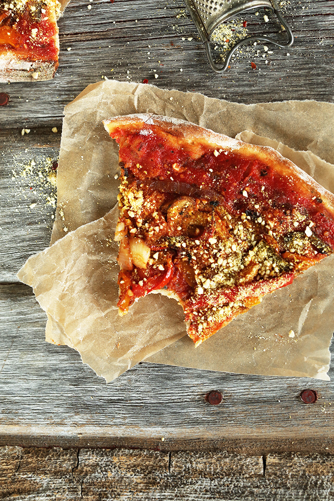

Vegan Pizza

Description
Around our house we eat pizza at least once a week. And if something horrific happens midweek (say, we run out of Netflix shows), it’s pizza night on Wednesday, too. Because life is short and we love our pizza and we intend to eat it. Often.
The BEST vegan pizza made with a garlic-herb crust, simple tomato sauce, TONS of sauteed veggies, and vegan parmesan cheese. Thin crust, tons of flavor, and ridiculously satisfying.
Ingredients
Pizza
- 1/2 of one Trader Joe’s garlic-herb pizza crust
- 1/2 cup each red, green, and orange bell pepper (loosely chopped)
- 1/3 cup red onion (chopped)
- 1 cup button mushrooms (chopped)
- 1/2 tsp each dried or fresh basil, oregano, and garlic powder
- 1/4 tsp sea salt
Sauce
- 1 15-ounce can tomato sauce* (organic when possible)
- 1/2 tsp each dried or fresh basil, oregano, garlic powder, granulated sugar
- ~1/4 tsp sea salt (to taste)
Toppings
- 1/2 cup vegan parmesan cheese
- Red pepper flake + dried oregano
Steps
Pizza
- Preheat oven to 425 degrees F (218 C) and position a rack in the middle of the oven.
- Bring large skillet to medium heat. Once hot, add 1 Tbsp olive oil (amount as original recipe is written // adjust if altering batch size), onion and peppers. Season with salt, herbs and stir. Cook until soft and slightly charred – 10-15 minutes, adding the mushrooms in the last few minutes. Set aside.
- Prepare sauce by adding tomato sauce to a mixing bowl and adding seasonings and salt to taste. Adjust seasonings as needed. Set aside. Note: If using tomato paste, add water to thin until desired consistency is reached.
- Prepare vegan parmesan if you haven’t already by blitzing raw cashews, sea salt, nutritional yeast and garlic powder in a food processor until a fine meal is reached. Transfer to jar and refrigerate to keep fresh.
- Roll out dough onto a floured surface and transfer to a parchment-lined round baking sheet. You’re going to add the pizza WITH the parchment directly to the oven to properly crisp the crust, so any round object will do as it’s not actually going into the oven (I use a wood board).
- Top with desired amount of tomato sauce (you’ll have leftovers, which you can store in a jar for later use), a sprinkle of parmesan cheese and the sautéed veggies.
- Use the baking sheet to gently slide the pizza (WITH the parchment underneath) directly onto the oven rack. The parchment will help prevent it from falling through.
- Bake for 17-20 minutes or until crisp and golden brown.
Garnish
- Serve with remaining parmesan cheese, dried oregano and red pepper flake. Leftovers keep well – no need to reheat! Cold pizza is yum.
Go Back